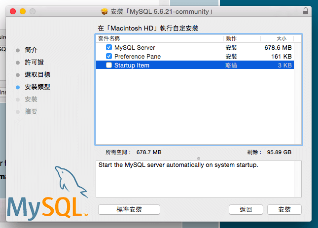
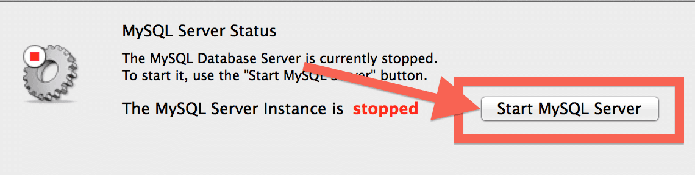
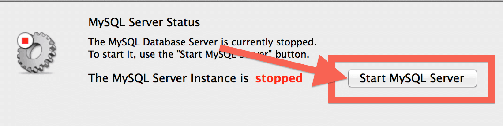

Mac MySQL 筆記
安裝
官網下載 .dmg 檔 http://dev.mysql.com/downloads/file.php?id=454017
一直下一步、下一步安裝

- 若是 OSX 10.10 以上，請把選項
startup Item取消！  安裝完成後，打開系統偏好設定，點選 MySQL
 


加 MySQL PATH 至 ZSH
- 編輯 .zshrc，
vim ~/.zshrc - 加入
export PATH="/usr/local/mysql/bin:$PATH"
- 確認是否成功
echo $PATH - 重新開啟 iTerm
- 編輯 .zshrc，
設定 root 密碼
- 進入 MySQL，
mysql -u root - 選擇資料庫
use mysql; - 更新資料
update user set password=PASSWORD("你的密碼") where User='root'; - 刷新 MySQL，
flush privileges; 離開 MySQL，
quit注意！設置密碼時，要記得加上引號，假設密碼為 1234，應該為:
update user set password=PASSWORD("1234") where User='root';以上參考: http://stackoverflow.com/questions/6474775/setting-the-mysql-root-user-password-on-osx
- 進入 MySQL，